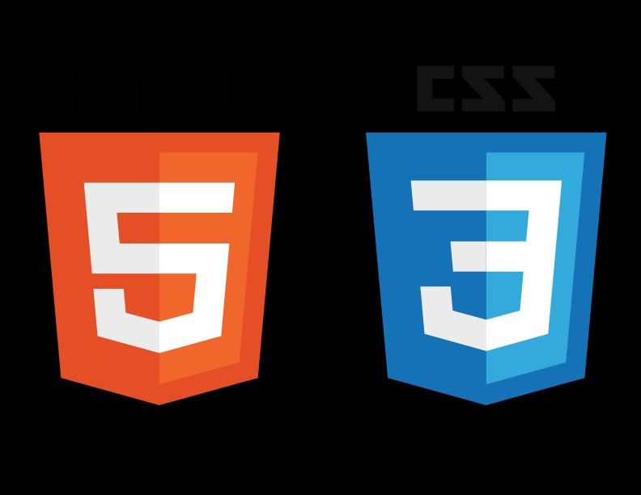
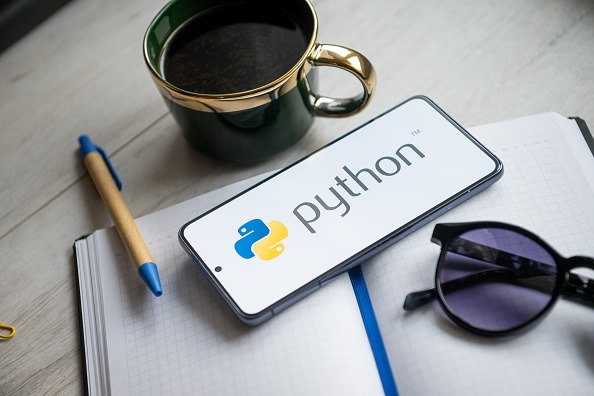
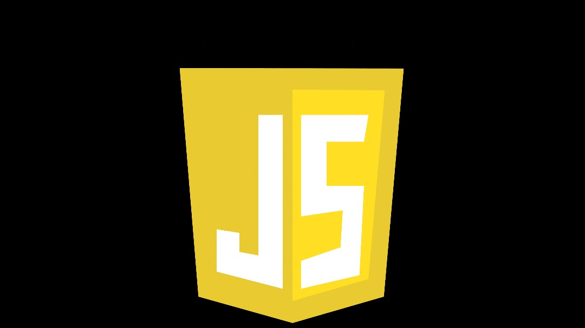

Passionné par la création de sites web modernes et responsifs.
J'ai une maîtrise moyenne de HTML et CSS pour structurer et styliser des interfaces utilisateur attrayantes.
python

Passionné par l'écriture de code propre et efficace, avec un fort accent sur la résolution de problèmes.
J'ai une maîtrise: des concepts fondamentaux tels que les boucles, les fonctions, la gestion des exceptions;utilisation de bibliothèques tierces avec pip et création de modules personnalisés etc.
lunix
J'ai developpé des compétences dans la gestion et la configuration de systèmes basés sur Unix.
Passionné par l'open source, je maîtrise les outils, scripts et concepts fondamentaux de Linux pour gérer des environnements complexes.
javascript

J'ai une maîtrise moyenne du JavaScript pour créer des applications dynamiques, performantes et interactives.
Passionné par l'innovation dans le développement web, avec une expérience dans les frameworks modernes et les environnements runtime.